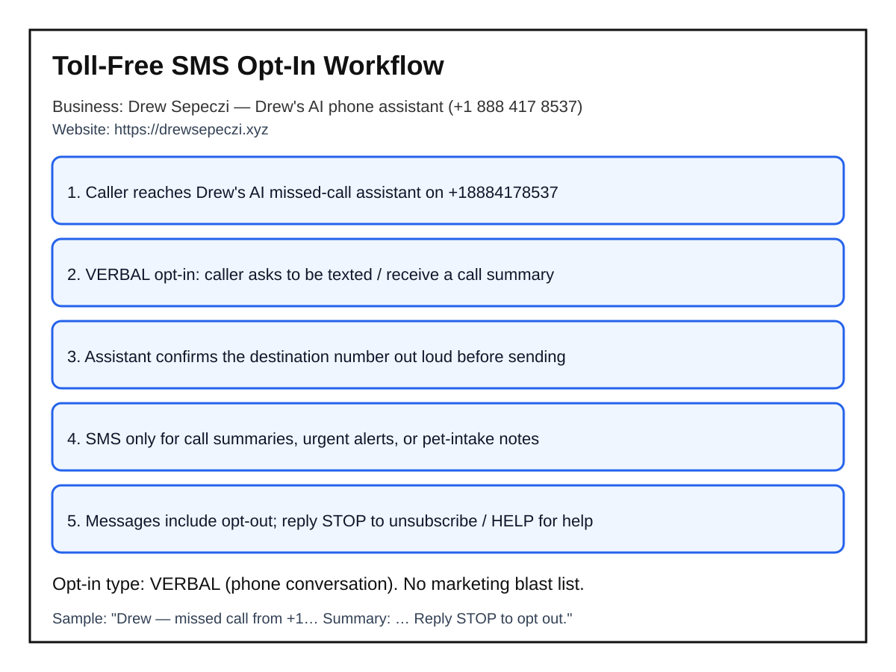

SMS Opt-In Workflow (Verbal)
Business: Drew Sepeczi (sole proprietor)
Service: Drew's AI missed-call assistant
Numbers: +1 (888) 417-8537 · +1 (224) 286-6565
Website: https://drewsepeczi.xyz
Opt-in type: VERBAL during a live phone conversation. There is no purchased marketing list and no pre-checked web form.
Step-by-step Call to Action
- Caller reaches Drew's AI missed-call assistant by dialing the Twilio number (or is connected after a missed call to Drew).
- The assistant discloses it is an AI for Drew Sepeczi and is not Drew in person.
- Caller asks to be texted (summary, confirmation, public link, or pet-sitting note), or Drew (business owner) receives owner-only automated summaries as the named recipient of his own service.
- Before any SMS to a caller's phone, the assistant reads the destination number aloud and asks for explicit verbal confirmation, for example: "I can text that to +1 … — is that okay?"
- Only after the caller clearly says yes does the assistant send the SMS.
- Every consumer-facing message includes opt-out language. Reply STOP to unsubscribe; reply HELP for help.

Message types
- Missed-call summaries to Drew
- Urgent mid-call alerts to Drew
- Pet-sitting intake notes to Drew
- Caller-requested follow-up texts (after verbal yes)
Frequency & rates
Message frequency varies with call volume (typically a few messages per interaction; not a recurring marketing drip). Message and data rates may apply.
Policies
Privacy Policy (states mobile numbers are not shared for marketing) · Terms of Service
Sample message
Drew — missed call from +1…. Summary: …. Reply STOP to opt out.
Contact: drewsepeczi@gmail.com